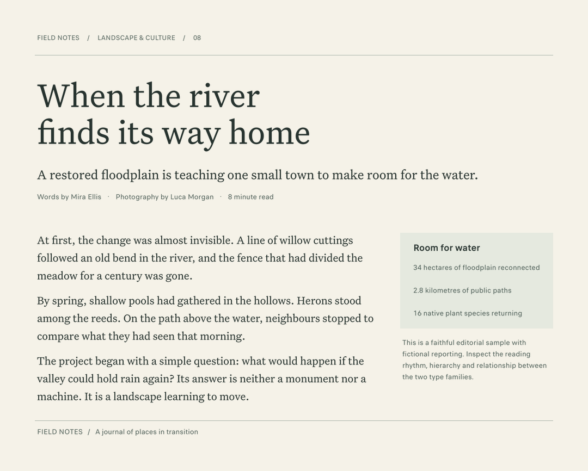

Local toolkit · JSON CLI · MCP
Font discovery & typography
for AI agents.
Find real fonts that fit the work—from quiet reading faces to expressive display type. Explore local collections, compare choices in context, and apply exact styles.
Bring fonts you already have, or build the pinned mixed open/proprietary collection. Optional visual retrieval searches rendered letterforms. You or your agent make the final design decision.
See the choice in the work
Actual harness outputs. Fictional sample content.


Judge rhythm, hierarchy and paired roles.
Exact-face manifest →

Inspect real text at the intended density.
Exact-face manifest →

Explore a different direction for a title or identity.
Exact-face manifest →
These examples show composition capabilities; they are not automatic recommendations or font licenses. Editable composition specs · Recorded browser checks
01 / Start small
Use fonts you already have
Install the core toolkit, point it at an authorized local font directory, and search. No full collection or model download is required for metadata and measurement discovery.
Python 3.10+ is required. The guide includes Windows commands, local-source configuration and troubleshooting.
Complete setup guide →git clone https://github.com/gavinjudd/type-evidence.git
cd type-evidence
python3 -m venv .venv
.venv/bin/python -m pip install -e .
.venv/bin/type-evidence doctorInstall from this GitHub source; no package-registry install is assumed. Next: create your local source configuration.
02 / Explore a direction
Discover by letterform, then refine
Optional FontCLIP retrieval connects text descriptions or a typography crop to rendered local fonts, including faces with unknown category metadata. Inspect candidates, page through alternatives, or follow an inspected reference.
Compare your actual copy and required styles. Retain the baseline or use one family when it serves the project.
The discovery and recovery loop →Choose your setup
- Core discovery
- Your fonts + Python dependencies. No learned model.
- Visual retrieval
- Optional PyTorch/OpenCLIP dependencies, an approximately 653 MB pinned checkpoint and a local rendered-font index. Indexing can be bounded and resumed.
- Pinned broad collection
- Roughly 6 GB of sources, plus catalogs and caches. Review each font's rights before use or distribution.
Search never downloads weights. Model terms are separate from the harness license. Visual setup and language coverage →
03 / Compare and apply
One workflow, different agents
The JSON CLI and local stdio MCP server share search, family inspection, exact asset resolution, specimens and contextual compositions. MCP returns bounded results and inline PNG previews.
Use a local client that supports stdio and filesystem access, with absolute paths to the executable, catalog and output directory. A remote-only client cannot directly read your local library.
From candidate to implementation
- Form a brief from audience, medium, language, hierarchy and real text.
- Inspect a few distinct finalists in a shared specimen or composition.
- Revise the font choice or layout, then resolve exact assets and settings.
Compositions export a preview and HTML/CSS/JS recipes. The live recipe checks the exact font bytes and loading before displaying the result.
A nonvisual agent should use measured evidence without claiming to have judged the image. Final applications still need target-environment review.
Broad access, honest evidence
The recorded v0.2 catalog contains 27,520 faces, 8,041 distinct family names and 8,710 family groups. Faces are not families; groups preserve vendor/version/width differences.
The default visual index covers 26,313 faces (95.61%) at recorded sample text and default axes. Missing coverage and render failures are reported. Fonts, indexes, weights and project text stay local.
Collection sources and scope →What the evaluation found
In three held-out cases, the harness did not improve final compositions over basic access to the same fonts. Semantic retrieval can miss the intended tone; visual references helped in a separate development study.
Native core tests pass on Linux, macOS and Windows. Full collection, model and browser workflows remain unverified on Windows; CUDA is unverified.
Read the evidence and limitations →Build with us
Improve the next typography choice
Develop and run the core tests with small synthetic fonts—no collection or model download. Help with retrieval failures, source metadata, platform behavior or fair design evaluations.
The contributor guide maps extension points and offers bounded, unassigned starter tasks. Bring reproducible examples; do not upload font files, weights, catalogs or private project data.
License boundaries
Original Type Evidence code and documentation are MIT licensed. Fonts, dependencies and model weights retain separate terms. Mixed-source access is not a universal font license.
No font binaries or model weights are published in the repository. A source pin, hash or preview does not grant asset distribution rights.
Licensing and upstream attribution →